Chương III — Thân mình (Torso)
III. Thân mình
CƠ THẲNG BỤNG
Điểm bám: Sụn sườn của các xương sườn 5–7
và mặt trước xương mu
Chức năng: Gập thân
Cơ chính: Thắt lưng
Cơ đối kháng: Các cơ dựng sống thắt lưng,
cơ mông lớn (hai bên), cơ vuông
thắt lưng (hai bên)
Cơ hiệp đồng: Cơ ngực lớn, các cơ
gập cổ, cơ hoành
Chi tiết cơ thẳng bụng
Đầu gối gập 80°, hai chân khép sát nhau. Đặt
một tay dưới cẳng chân để đỡ, trong khi
tay còn lại đặt ngay phía trên mắt cá chân.
Không thực hiện bài kiểm tra này khi đau vùng thắt lưng!
**Kéo rốn về phía cột sống để kiểm tra cơ
bụng ngang.
65
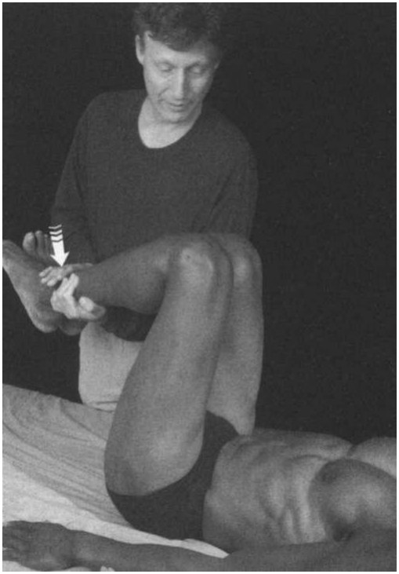

66 Liệu Pháp Thần Kinh – Cơ (NKT)
XOAY THÂN
Chức năng: Xoay thân (sử dụng cơ xiên trong cùng bên,
cơ xiên trong và cơ xiên ngoài
bên đối diện)
Tư thế
Đầu gối khách hàng khép sát nhau, hai chân nhấc khỏi giường.
Đưa hai chân sang một bên. Cản trở ở đầu gối theo hướng
chéo về vai đối diện, vai
đang cuộn nhấc lên khỏi giường.
Cơ chính: Ngực
Cơ đối kháng: Xoay về phía ngược lại
Cơ hiệp đồng: Cơ ngực lớn (bó ức),
các cơ xoay ngực và thắt lưng
Chi tiết cơ xiên
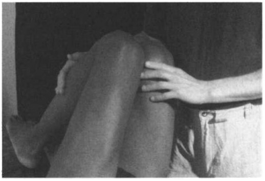


CƠ XIÊN, TƯ THẾ NẰM NGHIÊNG
VÀ ĐỨNG
Chức năng: Kiểm tra khả năng nghiêng thân của
cơ xiên trong và cơ xiên ngoài
Nằm nghiêng
Khách hàng nằm nghiêng, đầu gối gập và khép sát nhau.
Nhấc chân phía trên lên trong khi khách hàng
giữ hai đầu gối sát nhau. Đặt tay phía trên
mắt cá chân khách hàng. Cản trở chuyển động lên trên.
Thân mình
67
Cơ chính: Ngực
Cơ đối kháng: Các cơ nghiêng thân
phía đối diện
Cơ hiệp đồng: Cơ mác, cơ căng mạc đùi
(tensor fasciae latae), cơ mông vừa,
cơ mông nhỏ, cơ vuông thắt lưng
Đứng
Cản trở động tác nghiêng ngang ở cẳng tay. Dùng khi
người bệnh nghiêng về một bên. Điều chỉnh
cơ xiên phía đối diện.

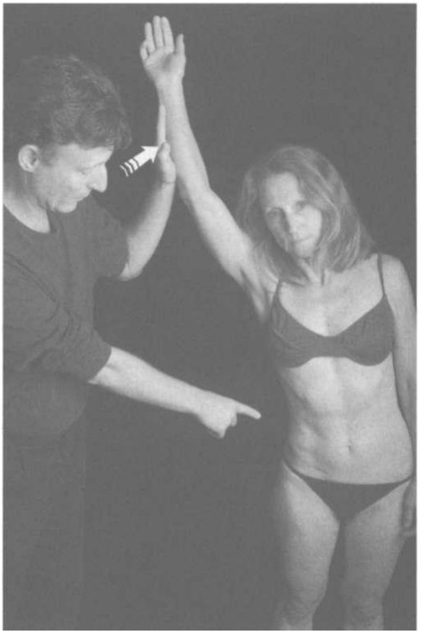
68 Liệu Pháp Thần Kinh – Cơ (NKT)
CƠ XIÊN NGOÀI
Điểm bám: Tám xương sườn dưới (5–12) và
đường trắng (linea alba), xương mu, mào chậu trước
Chức năng: Gập thân hai bên,
tạo áp lực lên nội tạng bụng
Gập ngang một bên, xoay thân
về phía đối diện
Khách hàng nhấc vai nhẹ khỏi giường trong khi
đưa chân cùng bên về tư thế gập
gối. Đặt một tay lên vai khách hàng và
tay còn lại lên đầu gối. Cản trở chuyển động của gối
về phía vai.
Cơ chính: Ngực, thắt lưng
Cơ đối kháng: Các cơ vùng thắt lưng dưới,
cơ xiên trong cùng bên
(xoay), cơ xiên đối bên (nghiêng
thân)
Cơ hiệp đồng: Cơ xiên ngoài đối bên
(xoay), cơ xiên trong cùng bên
(nghiêng thân), các cơ bụng
còn lại (gập)
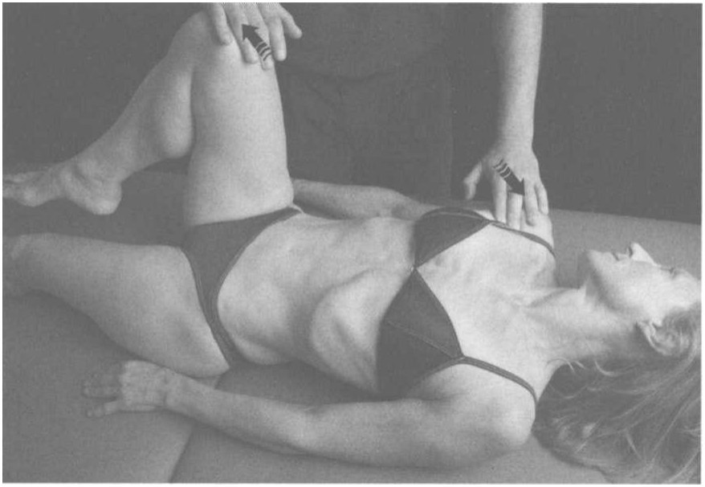
CƠ XIÊN TRONG
Điểm bám: Dây chằng bẹn, mào chậu
trước, vỏ mỏng ngực – thắt lưng (thoracolumbar aponeurosis)
và sụn sườn của bốn xương sườn dưới
(9–12), vỏ mỏng bụng,
đường trắng (linea alba)
Chức năng: Gập thân hai bên,
tạo áp lực lên nội tạng bụng
Gập ngang một bên, xoay thân
về phía cùng bên
Khách hàng nhấc vai nhẹ khỏi giường trong khi
đưa chân đối bên về tư thế gập
gối. Đặt một tay lên vai khách hàng và
tay còn lại lên đầu gối. Cản trở chuyển động của gối
về phía vai.
69
Thân mình
Cơ chính: Ngực, thắt lưng
Cơ đối kháng: Các cơ vùng thắt lưng dưới,
cơ xiên ngoài cùng bên
(xoay), cơ xiên đối bên (nghiêng
thân)
Cơ hiệp đồng: Cơ xiên ngoài đối bên
(xoay), cơ xiên trong cùng bên
(nghiêng thân), các cơ bụng
còn lại (gập)
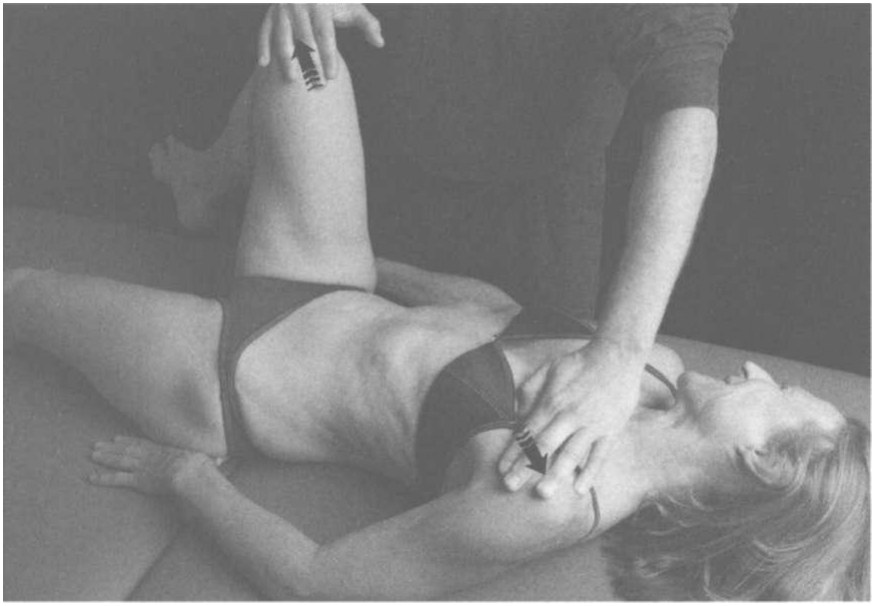
70 Liệu Pháp Thần Kinh – Cơ (NKT)
CƠ BỤNG
NGANG
Điểm bám: Dây chằng bẹn, mào chậu,
mạc ngực – thắt lưng, sụn
sườn 7–12 và mạc bụng,
đường trắng (linea alba), xương mu
Chức năng: Gập thân mình
Cơ chính: Thắt lưng
Cơ đối kháng: Cơ dựng sống thắt lưng,
cơ mông lớn (hai bên), cơ
vuông thắt lưng (hai bên)
Cơ hiệp đồng: Cơ hoành, cơ ngực
lớn, cơ gập cổ
Nâng hai chân của khách hàng khỏi bàn (tay của bạn
phía trên mắt cá chân của anh ấy) trong khi khách hàng
kéo rốn về cột sống thắt lưng và đẩy chân xuống bàn.
**Nếu không kéo rốn về cột sống, bài kiểm tra này
là của cơ thẳng bụng.

CƠ VUÔNG
THẮT LƯNG
Nằm ngửa và nằm sấp
Điểm bám: Mặt sau mào chậu và
xương sườn 12, mỏm ngang L1–4
Chức năng: Nâng hông và gập nghiêng
thân mình; hai bên cho phép duỗi
thắt lưng
Thân mình 71
Cơ chính: Thắt lưng
Cơ đối kháng: Cơ thắt lưng lớn (psoas),
cơ vuông thắt lưng bên đối diện,
cơ xiên bên đối diện, cơ bụng
Cơ hiệp đồng: Cơ mông vừa và
nhỏ (nâng hông), cơ mác,
cơ căng mạc đùi, cơ dựng sống thắt lưng,
cơ xiên cùng bên, cơ thang trên
Chân của khách hàng duỗi thẳng và khép lại,
giang về phía đối diện (nằm sấp thì khép về
cùng bên). Đặt một tay lên hông đối diện để
cố định, tay còn lại lên chân gần bạn hơn,
phía trên mắt cá chân. Cản chuyển động của
cả hai chân về phía bạn.


72 Liệu Pháp Thần Kinh – Cơ (NKT)
CƠ THẮT LƯNG LỚN (PSOAS)
Nằm ngửa và nằm sấp
Điểm bám: Đốt sống thắt lưng T12–L5
và mảnh khroles nhỏ xương đùi
Chức năng: Gập xương đùi tại khớp hông hoặc
gập thân mình tại khớp hông
Cơ chính: Thắt lưng, ngực
Cơ đối kháng: Cơ vuông thắt lưng,
cơ dựng sống thắt lưng, cơ mông lớn,
nhóm cơ mông sau (hamstrings)
Cơ hiệp đồng: Cơ gập hông, cơ bụng,
cơ hoành, cơ bậc thang, cơ gập cổ
Chân giang ra và gập 45°, xoay ra ngoài.
Cố định hông đối diện. Đặt tay phía trên
mắt cá chân và cản động tác khép và gập.
Nếu cần, đỡ chân của khách hàng bằng chân
của bạn.
Chân duỗi thẳng, khớp hông xoay ra ngoài.
Cẳng chân thõng ra ngoài mép bàn với chân giang
45°. Đặt một tay dưới gối và tay kia dưới
bàn chân của khách hàng. Cản chuyển động
xuống dưới.
Tư thế đặt tay
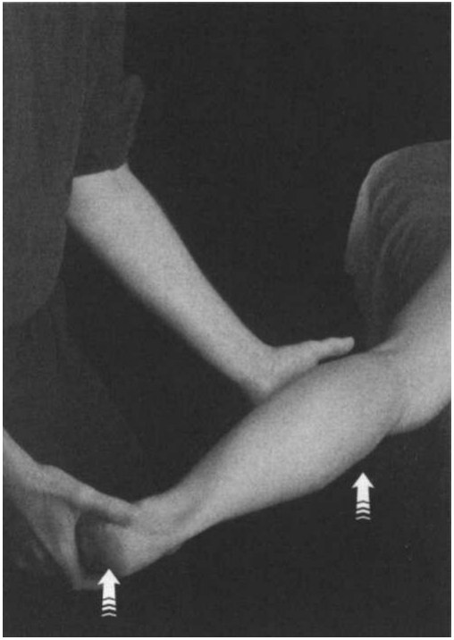
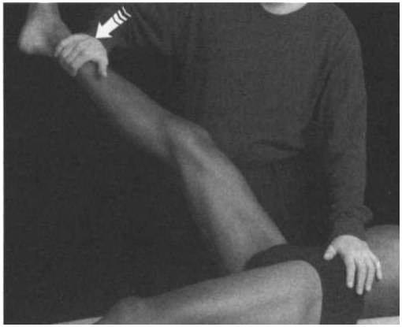

CƠ CHẬU
Nằm ngửa và nằm sấp
Điểm bám: Hố chậu (fossa iliaca) và
mảnh khroles nhỏ xương đùi
Chức năng: Gập xương đùi tại khớp hông hoặc
gập thân mình tại khớp hông
Cơ chính: Thắt lưng
Cơ đối kháng: Cơ vuông thắt lưng,
cơ mông lớn, cơ dựng sống thắt lưng,
nhóm cơ mông sau (hamstrings)
Cơ hiệp đồng: Cơ gập hông, cơ bụng,
cơ hoành, cơ bậc thang, cơ gập cổ
Gối gập và xoay vào trong. Đặt tay dưới
gối. Cản chuyển động xuống dưới.
Thân mình 73
Gối gập 90° với chân hơi giang ra. Đỡ
cẳng chân bằng tay dưới mắt cá chân của
khách hàng, tay kia đặt trên mặt trong của
gối. Hướng gối ra phía ngoài xương sườn
cùng bên. Cản tại gối.
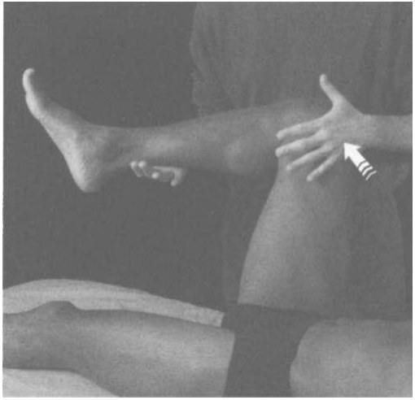
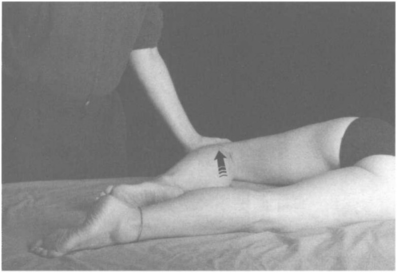
74 Liệu Pháp Thần Kinh – Cơ (NKT)
XOAY CỘT
SỐNG NGỰC
Cơ chính: Ngực
Cơ đối kháng: Xoay phía đối diện
Cơ hiệp đồng: Cơ xoay cột sống cổ
và thắt lưng
Khách hàng quay đầu sang một bên đồng
thời đẩy đầu và vai cùng bên xuống bàn.
Đặt tay dưới vai của cô ấy. Cản chuyển
động của vai xuống dưới.
Khách hàng quay đầu sang một bên đồng
thời đẩy đầu và vai cùng bên xuống bàn.
Đặt tay lên trên vai của cô ấy. Cản chuyển
động của vai hướng lên trên.
Hai lòng bàn tay úp vào nhau, khuỷu tay
khoá chặt. Cản phía trên cổ tay của cánh tay trong.
Tư thế đặt tay
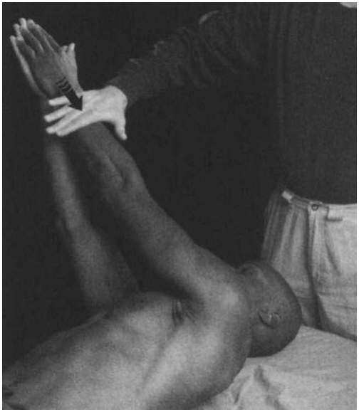
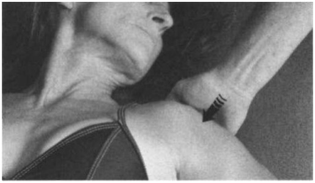
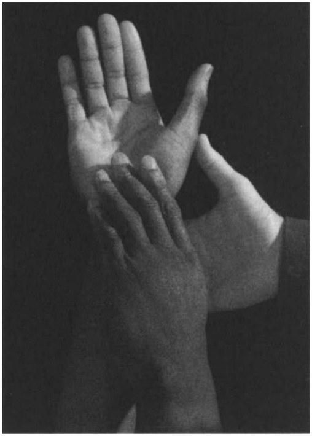
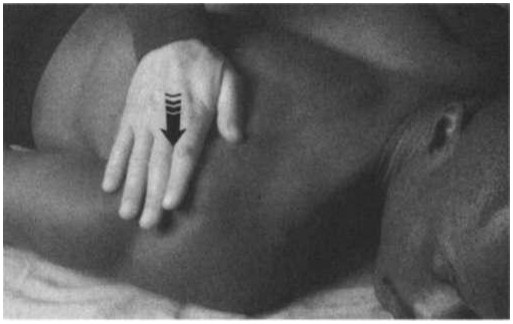
XOAY THẮT LƯNG
Nằm ngửa và nằm sấp
Xoay sang phải
Hai gối của khách hàng gập 90°, hai chân
kép lại. Anh ấy hạ nhẹ cả hai gối sang
phía đối diện. Đặt tay lên gối cùng bên,
tay kia đỡ gối đối diện. Cản chuyển động
về phía bạn.
**Đảo vị trí để kiểm tra xoay sang trái.
Thân mình 75
Cơ chính: Thắt lưng
Cơ đối kháng: Cơ xoay thắt lưng
phía đối diện
Cơ hiệp đồng: Cơ xoay cột sống ngực
phía đối diện, cơ xoay cổ cùng bên
Xoay sang trái
Hai gối của khách hàng gập 90°, hai chân
kép lại. Xoay nhẹ hai chân của anh ấy sang
phải. Đặt tay phía trên mắt cá chân gần bạn
nhất. Cản chuyển động sang ngang.
**Đảo vị trí để kiểm tra xoay sang phải.

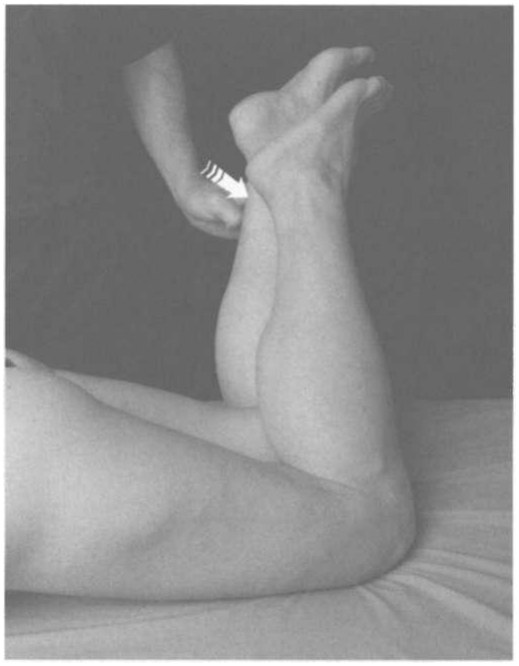
76 Liệu Pháp Thần Kinh – Cơ (NKT)
DUỖI THẮT LƯNG
Nằm ngửa và nằm sấp
Cơ chính: Thắt lưng
Cơ đối kháng: Cơ bụng, cơ
gập hông
Cơ hiệp đồng: Cơ bắp chân, nhóm
cơ mông sau (hamstrings), cơ mông lớn,
cơ dựng sống thắt lưng, cơ vuông
thắt lưng, cơ dựng sống ngực và cổ
Khách hàng nâng chân duỗi thẳng khỏi bàn. Đặt tay lên bắp chân của cô ấy trong khi tay kia
cố định hông đối diện. Cản chuyển động hướng lên trên.
Đặt hai tay dưới mắt cá chân của khách hàng. Khách hàng đẩy chân xuống bàn. Cản chuyển động
xuống dưới.
Bài kiểm tra này dành cho cơ dựng sống thắt lưng và
nhóm cơ ngang – gai (transversospinalis).
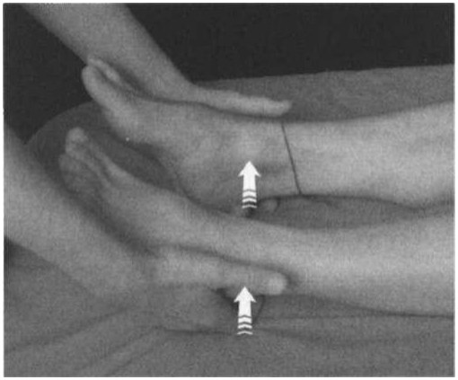
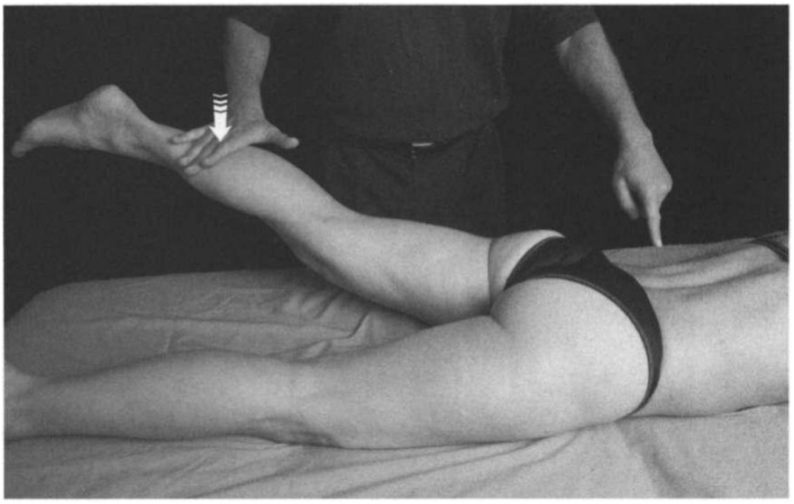
Thân mình 79
Các Nhóm Cơ Chức Năng Của Thân Mình
CƠ GẬP THÂN
1. Cơ thẳng bụng
2. Cơ xiên ngoài
3. Cơ xiên trong
4. Cơ bụng ngang
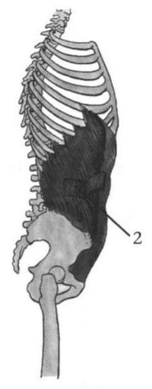


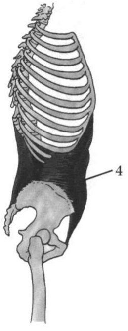
78 Liệu Pháp Thần Kinh – Cơ (NKT)
CƠ DUỖI THÂN
Cơ dựng sống
1. Cơ sườn – sống: A. Phần cổ; B. Phần ngực;
C. Phần thắt lưng
2. Cơ dài nhất: D. Phần đầu; E. Phần cổ;
F. Phần ngực
3. Cơ gai: G. Phần đầu; H. Phần cổ;
I. Phần ngực
4. Cơ bán gai: J. Phần đầu; K. Phần cổ
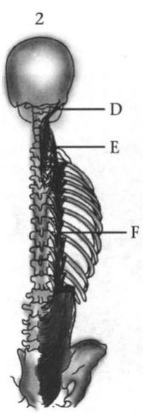
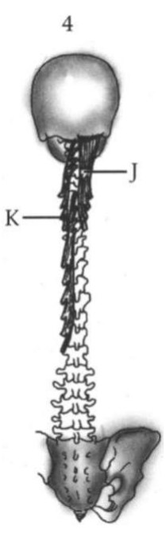
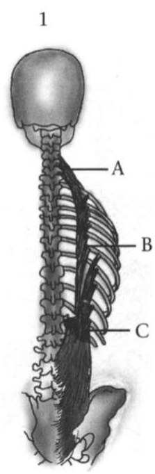

Thân mình 79
CƠ NGHIÊNG
THÂN
1. Cơ vuông thắt lưng
2. Cơ xiên ngoài
3. Cơ xiên trong
80 Liệu Pháp Thần Kinh – Cơ (NKT)
CƠ XOAY THÂN
1. Cơ xiên ngoài
2. Cơ xiên trong
3. Cơ nhiều tia (multifidi)
4. Cơ xoay (rotatores)
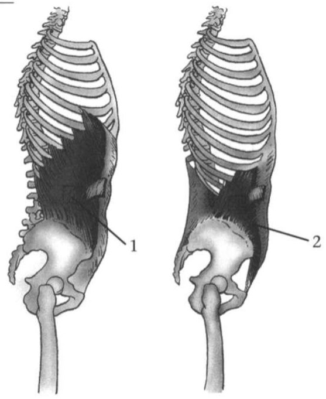
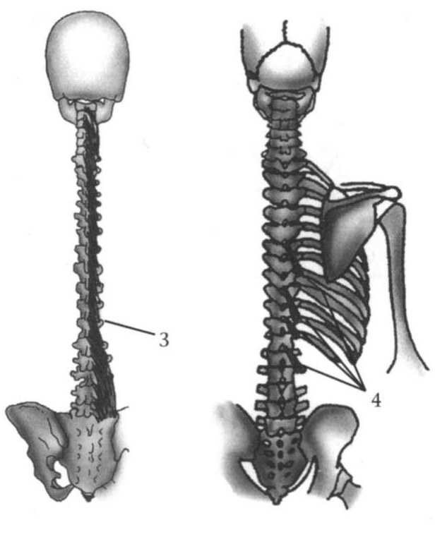